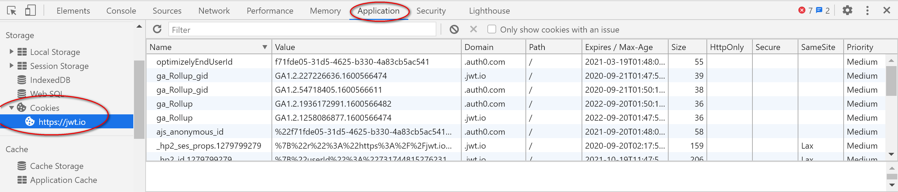
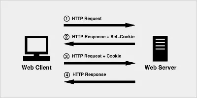
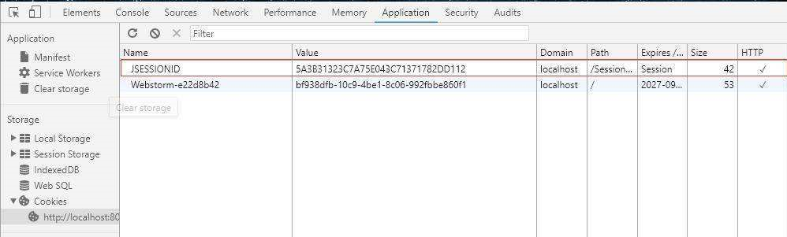
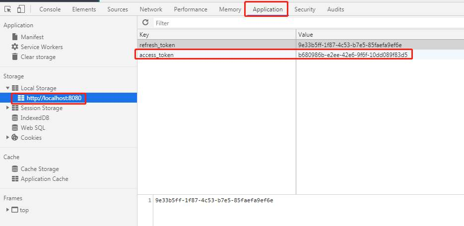
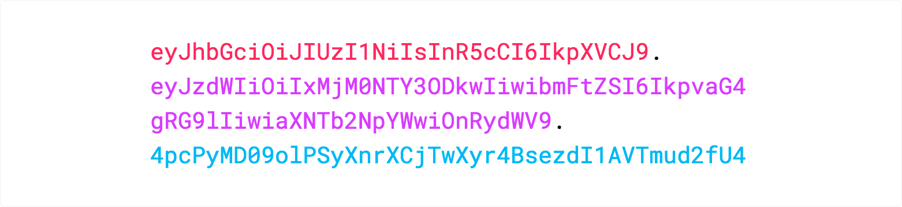
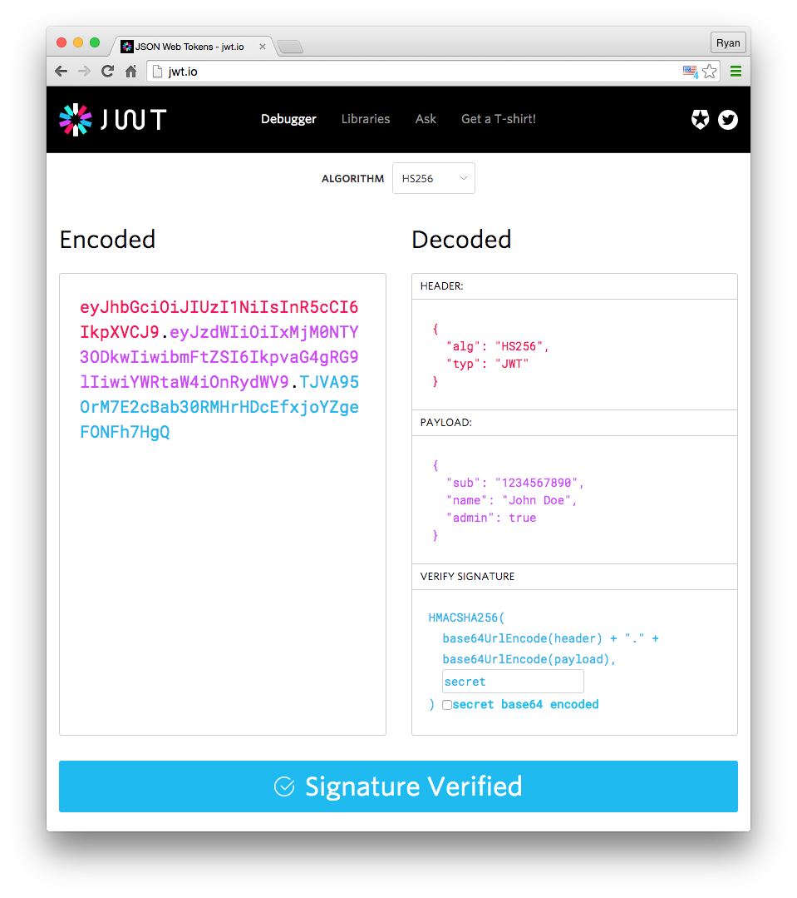

本书作者：测试开发刚哥，文章版权归个人所有，未经授权请勿转载。
HTTP 协议是无状态的，无状态意味着，服务器无法给不同的客户端响应不同的信息。这样一些交互业务就无法支撑了。Cookie 应运而生。
Cookie
通过 F12 开发者工具，先瞅瞅 Cookie 的颜值

从图中可以看到 Cookie 包括这些内容：Name，Value，Domain，Path，Expires / Max-Age，Size，HttpOnly，Secure，SameSite，Priority。
Cookie 的传递会经历这 4 步
- Client 发送 HTTP 请求给 Server
- Server 响应，并附带 Set-Cookie 的头部信息
- Client 保存 Cookie，之后请求 Server 会附带 Cookie 的头部信息
- Server 从 Cookie 知道 Client 是谁了，返回相应的响应

Cookie 的英文翻译是甜品，使用 Cookie 可以自动填写用户名、记住密码等，是给用户的一点甜头。
Server 拿到 Cookie 后，通过什么信息才能判断是哪个 Client 呢？服务器的 SessionID。
Session
如果把用户名、密码等重要隐私都存到客户端的 Cookie 中，还是有泄密风险。为了更安全，把机密信息保存到服务器上，这就是 Session。Session 是服务器上维护的客户档案，可以理解为服务器端数据库中有一张 user 表，里面存放了客户端的用户信息。SessionID 就是这张表的主键 ID。
Cookie 中保存 SessionID

Session 信息存到服务器，必然占用内存。用户多了以后，开销必然增大。为了提高效率，需要做分布式，做负载均衡。因为认证的信息保存在内存中，用户访问哪台服务器，下次还得访问相同这台服务器才能拿到授权信息，这就限制了负载均衡的能力。而且 SeesionID 存在 Cookie，还是有暴露的风险，比如 CSRF（Cross-Site Request Forgery，跨站请求伪造）。
如何解决这些问题呢？基于 Token 令牌鉴权。
Token
首先，Token 不需要再存储用户信息，节约了内存。其次，由于不存储信息，客户端访问不同的服务器也能进行鉴权，增强了扩展能力。然后，Token 可以采用不同的加密方式进行签名，提高了安全性。
Token 就是一段字符串

Token 传递的过程跟 Cookie 类似，只是传递对象变成了 Token。用户使用用户名、密码请求服务器后，服务器就生成 Token，在响应中返给客户端，客户端再次请求时附带上 Token，服务器就用这个 Token 进行认证鉴权。
Token 虽然很好的解决了 Session 的问题，但仍然不够完美。服务器在认证 Token 的时候，仍然需要去数据库查询认证信息做校验。为了不查库，直接认证，JWT 出现了。
JWT
JWT 的英文全称是 JSON Web Token。JWT 把所有信息都存在自己身上了，包括用户名密码、加密信息等，且以 JSON 对象存储的。
JWT 长相是xxxxx.yyyyy.zzzzz，极具艺术感。包括三部分内容
-
Header
包括 token 类型和加密算法（HMAC SHA256 RSA）。
{ "alg": "HS256", "typ": "JWT" } -
Payload
传输内容。
{ "sub": "1234567890", "name": "John Doe", "admin": true } -
Signature
签名，把 header 和 payload 用 base64 编码后".“拼接，加盐 secret（服务器私钥）。
HMACSHA256( base64UrlEncode(header) + "." + base64UrlEncode(payload), secret)
再画个妆，漂亮

可以到https://jwt.io/#debugger-io这个网址卸妆哦

给 Token 穿个外套
Authorization: Bearer <token>
这就是我们在请求 Header 里面看到的内容格式了。
简要回顾
本文简单介绍了 Cookie、Session、Token、JWT 的概念，以及为什么需要这些技术。至于更深入的原理和代码使用，就请读者自行研究了哦。至少这篇文章能让你搞懂，看到不会觉得陌生了。哈哈哈。
参考资料
jwt-handbook-v0_14_1